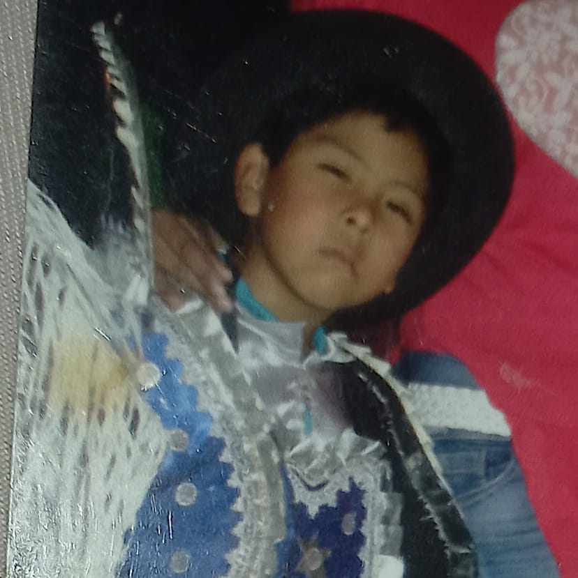
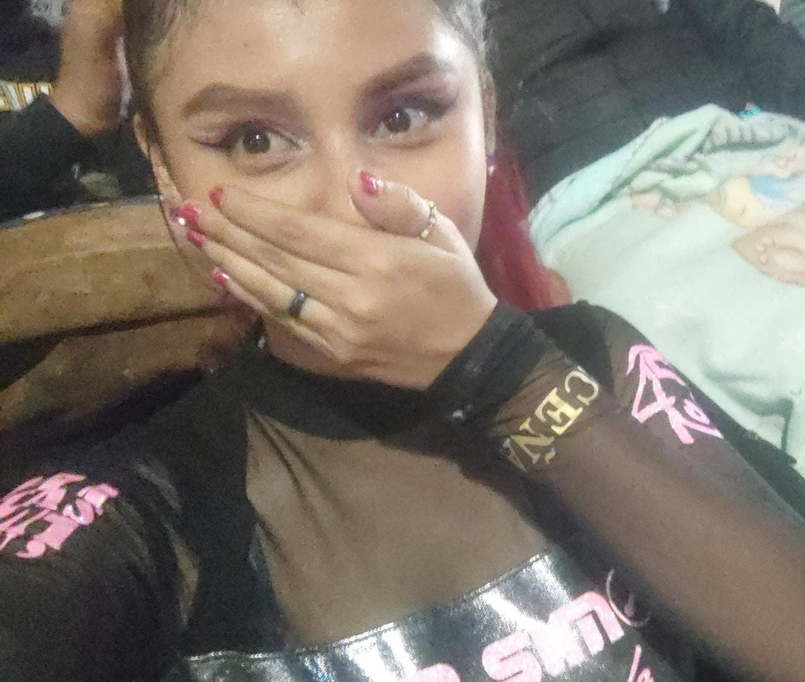

Tengo 16 años, me gusta investigar sobre animales extintos, asi que decidí crear esta página para que las personas que esten interesadas en este tema tan complejo, puedan acceder a el de manera mas facíl y sin tanta dificultad, contara con la historia de cada animal extinto y algunas de sus características. Espero disfruten la página web y que les sea de utilidad.
Tengo 17 años, para mi este tema es muy curioso y llamativo a su vez didactica, por otro lado tambien considero que es una forma increíble de combinar la fascinación por los animales que pasaron atraves de la historia que vivio nuestro planeta usando la educación y la conciencia ambiental.
Tengo 17 años, decidi crear esta pagina por que en internet no es muy comun o muy completa la informacion sobre el tema que escogimos en grupo. Siento que esto sera de gran ayuda en un futuro ya que a la mayoria de niños y jovenes les interesa mucho sobre la vida antes de nuestra evokucion. Deseo y espero que tu, el que este viendo la pagina y leyendo esto, sepa aprovechar la informacion que contiene la pagina y que sobre todo lo use para algo de provecho ya que mi grupo se esforzo muchisimo para creaela.
